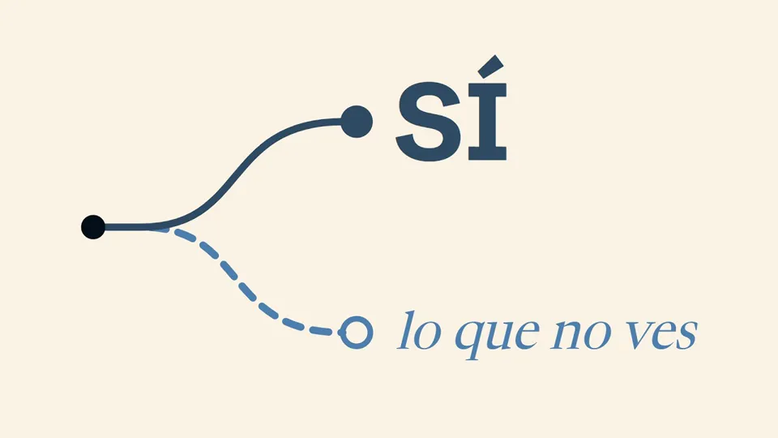

ProductividadEpisodio 128 de octubre de 20265:21
El coste real de decir que síEl coste de oportunidad
Cada vez que dices que sí a algo, le estás diciendo que no a otra cosa.

Al pulsar «Ver aquí» se carga el reproductor de YouTube, en su modo de privacidad mejorada.
Una acción para esta semana
Antes de tu próximo sí, ponle precio a la alternativa.
La idea
Qué es el coste de oportunidad
Cada vez que dices que sí a algo, le estás diciendo que no a otra cosa. Y esa otra cosa nunca viene en la invitación.
En este vídeo: el experimento del DVD que lo demostró en 2009, lo que Bastiat llamó «lo que no se ve», por qué un sí casi siempre se paga en el futuro y una sola acción para el lunes: antes de tu próximo sí, ponle precio a la alternativa.
Tema
Etiquetas
- coste de oportunidad
- gestión del tiempo
- decisiones
Seguir leyendo
El guion · 818 palabras
Lo que dice el vídeo
El texto del vídeo, tal cual, por capítulos. Pulsa un minuto para verlo en YouTube desde ahí.
0:00Dos segundos para decir que sí
Lunes, diez menos dos de la mañana. A Lucía le llega una invitación: «Seguimiento semanal. Una hora.
Todos los lunes». Pulsa «Aceptar». Le ha costado dos segundos.
O eso cree.
0:16Cada sí es un no a otra cosa
Cada vez que dices que sí a algo, le estás diciendo que no a otra cosa. El problema es que esa otra cosa nunca viene en la invitación. No tiene hora, ni sala, ni nombre.
Los economistas la llaman coste de oportunidad: lo que vale la mejor alternativa a la que renuncias. Y casi nunca la vemos. En dos mil nueve, un grupo de investigadores lo puso a prueba con algo muy pequeño.
Pidieron a unos estudiantes que imaginaran que podían comprar un DVD por catorce
0:44El experimento del DVD
dólares con noventa y nueve. A la mitad les dieron dos opciones: comprarlo, o no comprarlo. A la otra mitad, exactamente lo mismo, dicho de otra forma: comprarlo, o quedarse los catorce noventa y nueve para otras cosas.
Con la primera pregunta, quería el DVD el setenta y cinco por ciento. Con la segunda, el cincuenta y cinco. Nadie les dio información nueva.
Solo les nombraron la otra opción. Otro ejemplo, esta vez de la vida real. Uno de los autores lo vivió en una tienda de música: casi una hora dudando entre un equipo de mil dólares y otro de setecientos.
El vendedor le preguntó: «¿Qué prefiere? ¿El caro, o el barato y trescientos dólares en discos?». Al momento, el barato estaba en la caja.
1:30La tienda de música
Los economistas llevan casi dos siglos dándole vueltas a esta idea. En mil ochocientos cincuenta, Frédéric Bastiat la resumió así: lo que se ve, y lo que no se ve. Lo que se ve es la compra: catorce noventa y nueve a cambio de un DVD.
Lo que no se ve es todo lo que esos catorce noventa y nueve podrían haber sido. Lo que dejó de pasar. Y casi siempre juzgamos solo por lo que se ve.
1:56Lo que se ve y lo que no se ve
Daniel Kahneman explica por qué en «Pensar rápido, pensar despacio»: la mente trabaja con lo que tiene delante, como si eso fuera todo lo que hay. Desde entonces, la prueba se ha repetido muchas veces: treinta y nueve experimentos, más de catorce mil personas. Cuando te recuerdan la otra opción, dices menos veces que sí.
El efecto de nombrar la otra opción se confirma, aunque es más pequeño que en aquel primer estudio. No es un milagro. Es un empujón: inclina un poco la balanza.
Y un empujón es justo lo que necesitas antes de decir que sí. ¿Y por qué nos pasa tanto con el tiempo? Porque un sí casi siempre se paga en el futuro.
Y el futuro, visto desde hoy, parece vacío. En dos mil cinco, Gal Zauberman y John Lynch comprobaron que esperamos tener más
2:43Un empujón, no un milagro
tiempo libre mañana que hoy. Por eso nos comprometemos de más. Luego llega el mañana.
Y está tan lleno como hoy. Volvamos a Lucía. Una hora a la semana parece poco.
Pero en un año son cincuenta y dos horas. Más de dos días enteros. Cincuenta y dos horas que no ha dedicado a escribir, a aprender, o a descansar.
3:10Por qué el futuro parece vacío
Este es el mapa completo. Un sí. Lo que haces.
Y lo que dejas de hacer: la parte que nadie dibuja. Como explica «Cuatro mil semanas», de Oliver Burkeman: si vives ochenta años, tendrás unas cuatro mil. No son tantas.
Y precisamente porque no son tantas, elegir algo es siempre dejar fuera otra cosa. No hay manera de hacerlo todo. Pero sí de elegir sabiendo lo que cuesta.
3:38El mapa completo: 52 horas
Entonces, ¿qué cambia el lunes por la mañana? Una sola cosa. Antes de aceptar algo que se repite, ponle precio en horas.
Multiplica. Una reunión semanal de una hora: cincuenta y dos horas al año. Más de seis días de trabajo.
Media hora de café cada día laborable: más de cien horas. Unos catorce días de trabajo. Juntas suman casi un mes entero de trabajo, cada año.
Y después, ponle nombre a ese coste. No «tiempo», en abstracto: «esta reunión, o cincuenta y dos horas de escribir». Es lo que hizo el vendedor de los discos.
No te da información nueva. Te pone delante la otra opción. Y si lo que te piden es para dentro de unas semanas, haz una segunda prueba: ¿dirías que sí si fuera mañana?
4:29Ponle precio en horas
Si la respuesta es no, ese sí no es generosidad. Es una deuda que le pasas a tu yo del futuro. Y tu yo del futuro no va a tener más tiempo que tú.
Para terminar, lo que te llevas de este vídeo. Una idea: cada sí tiene un precio, y se paga en algo que todavía no ves. Una pregunta: ¿a qué le estás diciendo que no?
Una acción: antes de tu próximo sí, ponle precio a la alternativa. Saber cuánto cuesta un sí es la mitad. La otra mitad es saber decir que no.
5:02Una deuda para tu yo del futuro
De eso va el próximo vídeo.
5:21 · 10 capítulos
Capítulos, a escala
La línea es el vídeo entero; cada marca, un capítulo en su minuto.
- 010:00Dos segundos para decir que sí
- 020:16Cada sí es un no a otra cosa
- 030:44El experimento del DVD
- 041:30La tienda de música
- 051:56Lo que se ve y lo que no se ve
- 062:43Un empujón, no un milagro
- 073:10Por qué el futuro parece vacío
- 083:38El mapa completo: 52 horas
- 094:29Ponle precio en horas
- 105:02Una deuda para tu yo del futuro
En redes
La idea, en un minuto

De dónde sale
Libros y fuentes
Libros
- Cuatro mil semanas. Gestión del tiempo para mortalesOliver Burkeman · Planeta, 2022
- Pensar rápido, pensar despacioDaniel Kahneman · Debate, 2012
Estudios y fuentes
- Frederick, Novemsky, Wang, Dhar y Nowlis (2009). Opportunity Cost Neglect. Journal of Consumer Research · doi.org/10.1086/599764
- Maguire, Persson y Tinghög (2023). Opportunity cost neglect: a meta-analysis. Journal of the Economic Science Association · doi.org/10.1007/s40881-023-00134-6
- Zauberman y Lynch (2005). Resource slack and propensity to discount delayed investments of time versus money. Journal of Experimental Psychology: General · doi.org/10.1037/0096-3445.134.1.23
- Frédéric Bastiat (1850). Lo que se ve y lo que no se ve (dominio público) · en.wikisource.org/wiki/That_Which_Is_Seen,_a
Sigue con
Otras ideas
-
ProductividadNº 2
-
MenteNº 3
5:1311 nov
Por qué no puedes concentrarte (y no es por el móvil)
Una acciónAntes de cambiar, apunta dónde lo dejas.
-
AmbiciónNº 4
4:4718 nov
Abandonar a tiempo no es rendirse: la falacia del coste hundido
Una acciónAntes de seguir, pregúntate si lo empezarías hoy.


Newsletter gratuita
El ejercicio de cada vídeo, por escrito.
La idea de cada vídeo, con el ejercicio para aplicarla y los libros de donde sale.